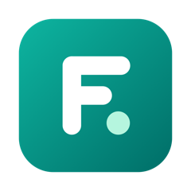

FinappPolítica de Privacidad
Vigente desde el 24 de noviembre de 2026.
En resumen: lo que registras en Finapp se guarda en tu equipo. Finapp no tiene servidores propios, no recopila tus datos, no muestra publicidad y no vende ni comparte tu información con nadie.
Qué datos guarda Finapp y dónde
- Tus finanzas: cuentas, movimientos, tarjetas, préstamos, personas, categorías, etiquetas y preferencias. Se guardan solo en el equipo donde usas la app.
- Fotos de vouchers: el texto se lee en tu equipo. La foto no se envía a ningún servicio.
- Copias de seguridad: se guardan únicamente donde tú elijas (una carpeta de tu equipo o de tu nube, o tu Google Drive).
Finapp no usa herramientas de analítica ni de publicidad, y no crea una cuenta de usuario en ningún servidor.
Uso de tu cuenta de Google
Vincular Google es opcional. Finapp pide dos permisos, cada uno para una función que tú activas:
- Lectura de Gmail (solo lectura). Sirve para encontrar los avisos de operaciones de tu banco (consumos, transferencias, pagos) y proponerte el movimiento ya lleno. Finapp busca solo correos recientes que parecen avisos de operaciones, o los de los remitentes que tú indiques. Los correos se leen y procesan en tu equipo. No se guardan completos: solo queda la propuesta (monto, fecha, comercio, últimos dígitos de la tarjeta y un extracto corto del aviso), en tu equipo. Finapp no envía, borra ni modifica correos.
- Archivos de Google Drive creados por Finapp. Sirve para guardar tu copia de seguridad en tu propio Drive. Finapp no puede ver tus demás archivos.
La autorización de Google queda guardada en el llavero seguro de tu equipo. Finapp se conecta directamente con Google desde tu equipo; tus datos de Google no pasan por ningún servidor de Finapp ni de terceros.
El uso que Finapp hace de la información recibida de las API de Google cumple la Política de Datos de Usuario de los Servicios de API de Google, incluidos los requisitos de Uso Limitado. En particular, Finapp no transfiere esos datos a terceros, no los usa para publicidad, no los usa para entrenar modelos de inteligencia artificial y ninguna persona los lee.
Otras conexiones a internet
- Tipo de cambio: Finapp consulta un servicio público de tipos de cambio. Esa consulta no incluye ningún dato tuyo.
- Acceso desde PC: si lo activas, la app muestra una página dentro de tu red Wi-Fi. Los datos no salen de tu equipo.
Cómo retirar los permisos y borrar tus datos
- En Finapp puedes dejar de leer el correo o desvincular Google Drive cuando quieras.
- También puedes quitar el acceso desde tu cuenta de Google: myaccount.google.com/permissions.
- Para borrar todo lo que Finapp guarda, elimina la app de tu equipo. Las copias de seguridad que hayas guardado en tu Drive o en una carpeta las borras tú desde ahí.
Menores de edad
Finapp no está dirigida a menores de 13 años y no recopila datos de ninguna persona.
Cambios a esta política
Si esta política cambia, la nueva versión se publicará en esta página con su fecha de vigencia.
Contacto
Para cualquier consulta sobre privacidad, escribe a eurrutia489@gmail.com.